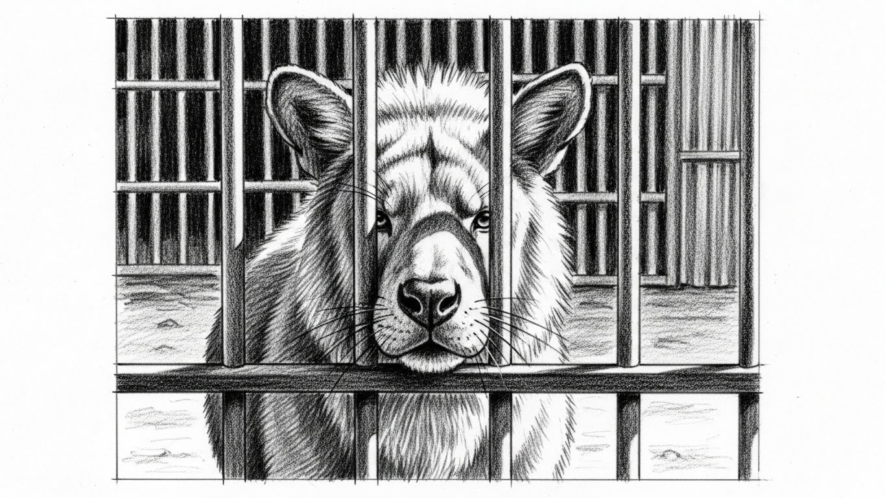
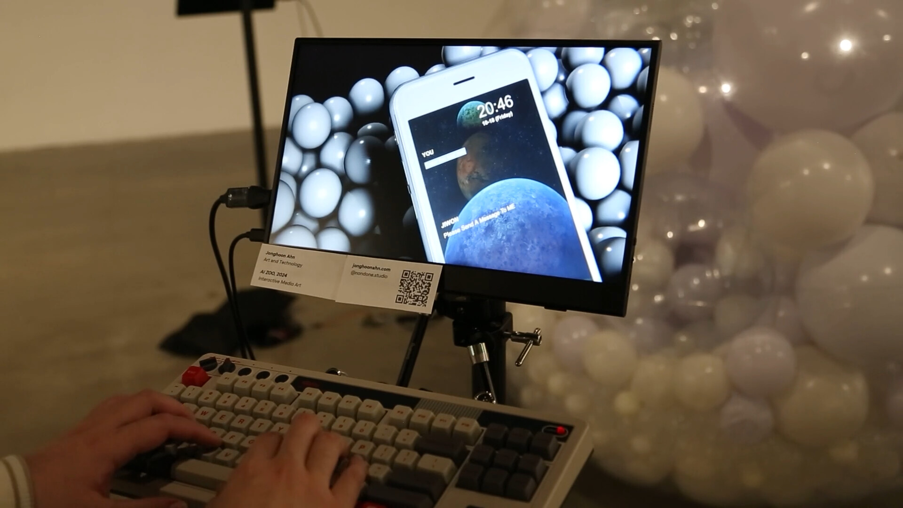

AI ZOO
When an artificial character appears distressed, what exactly are we responding to?
How much of an artificial being's perceived emotional reality comes from its behavior—and how much comes from the person interpreting it?
AI ZOO is a responsive installation that places a digital human, voice, motor-driven movement, light, and an audience inside one behavioral loop. It begins with a deliberately uncomfortable setup: an artificial entity appears confined and repeatedly asks for help. The work investigates how a viewer reads vulnerability, emotion, and intent into a system that has no demonstrated inner experience.
What people see, do, and experience
On entering, visitors encounter a digital character inside a physical arrangement of transparent forms. It can address them through synthesized speech while a large sphere moves and pulses around the installation.
Visitors can respond through text and gestures. Their input is treated as more than a discrete command: the installation varies its movement, vocal delivery, and lighting, creating an apparent mood that can change over time.
The experience moves between interface, object, and theater. Participants are asked to interpret movement and timing, not simply read a generated text response.
From concept to implementation
I conceived and directed the piece and built the interaction architecture connecting Unity, language-model responses, the digital-human presentation, sensor input, synthesized speech, and Arduino-controlled physical motion.
Audience text is mapped into affective parameters; gestures and repeated actions add to the state. Those values are translated into motor behavior, light, and voice characteristics. The same underlying state therefore has multiple simultaneous expressions.
Unity C# and Python coordinate the media and physical subsystems. The research framing is part of the authored work, while the exhibited installation is the practical prototype that brings the question into a space shared with viewers.
How the work is assembled
Key production stages and interfaces from the original project; this is a system summary, not a claim that every stage was developed from scratch.
Why these choices mattered
Rather than show an AI conversation in a conventional chat interface, I designed a system with physical consequences. Slow pulsation, unstable shaking, an altered voice, or a delay can be interpreted differently even when the underlying computation remains legible.
The transparent enclosure matters as much as the technical stack: it turns an abstract response into a scene of apparent confinement. The meaning emerges from the interface condition, not from any claim that the machine actually suffers.




An AI capability becomes more legible—and more ambiguous—when it is given a body, a spatial constraint, and consequences a person can perceive. AI ZOO is a practice-based inquiry into that threshold; it is not presented as a controlled psychological experiment.